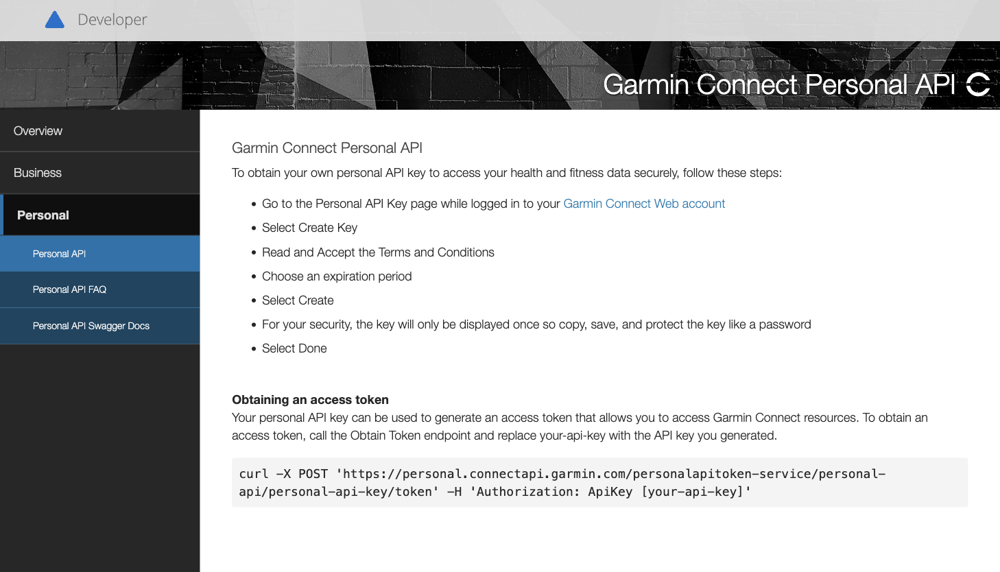
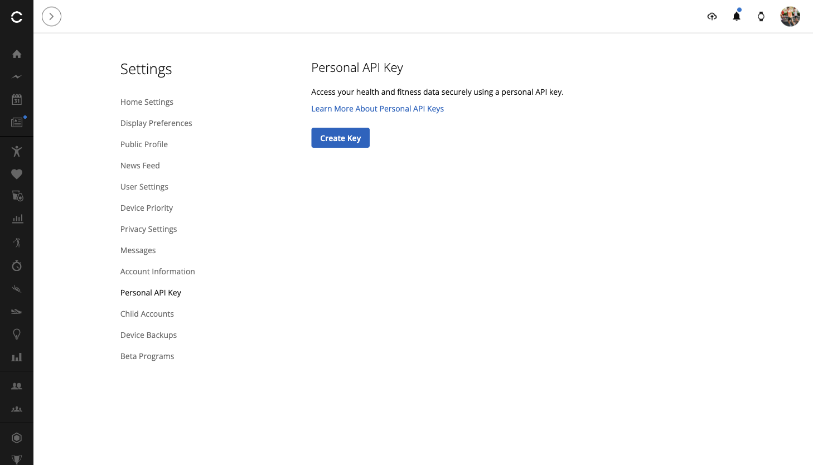
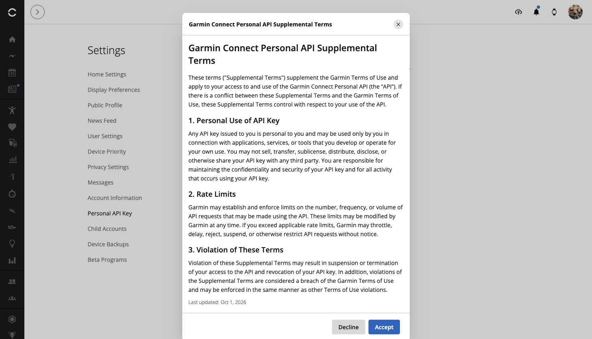
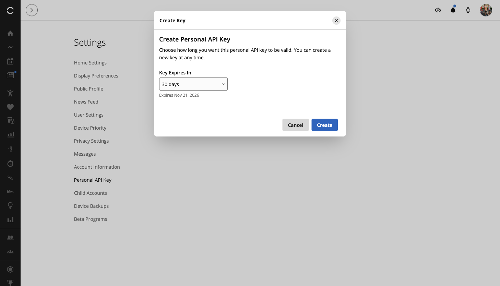
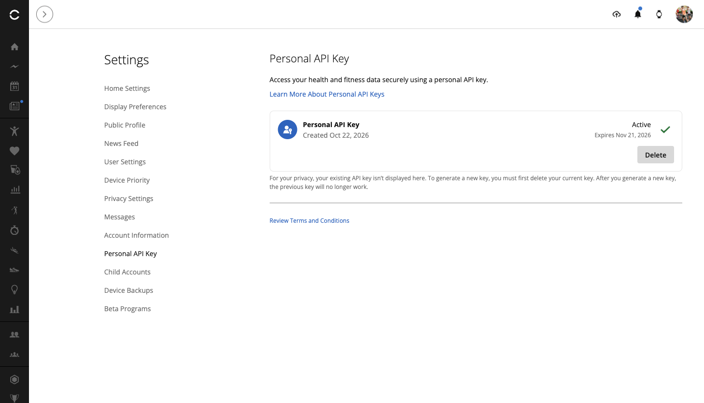
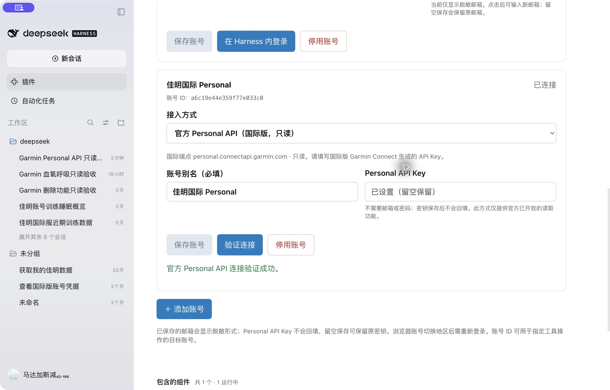
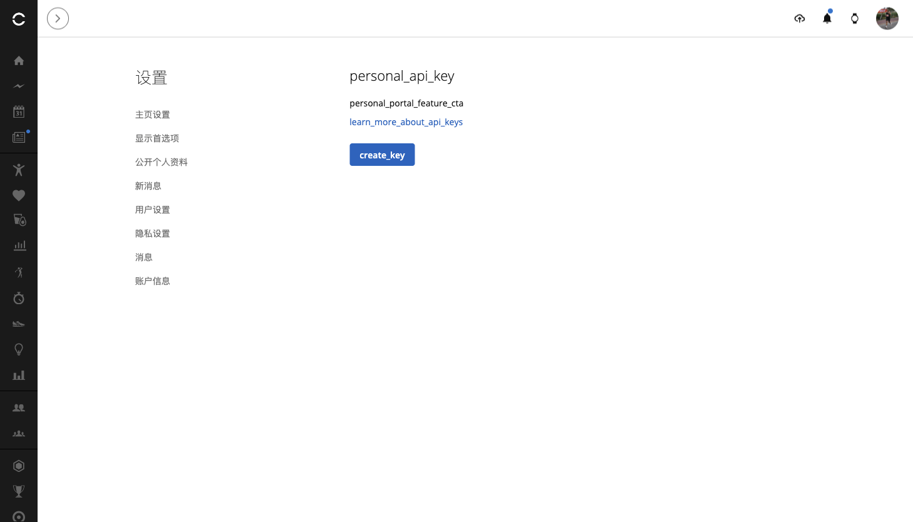
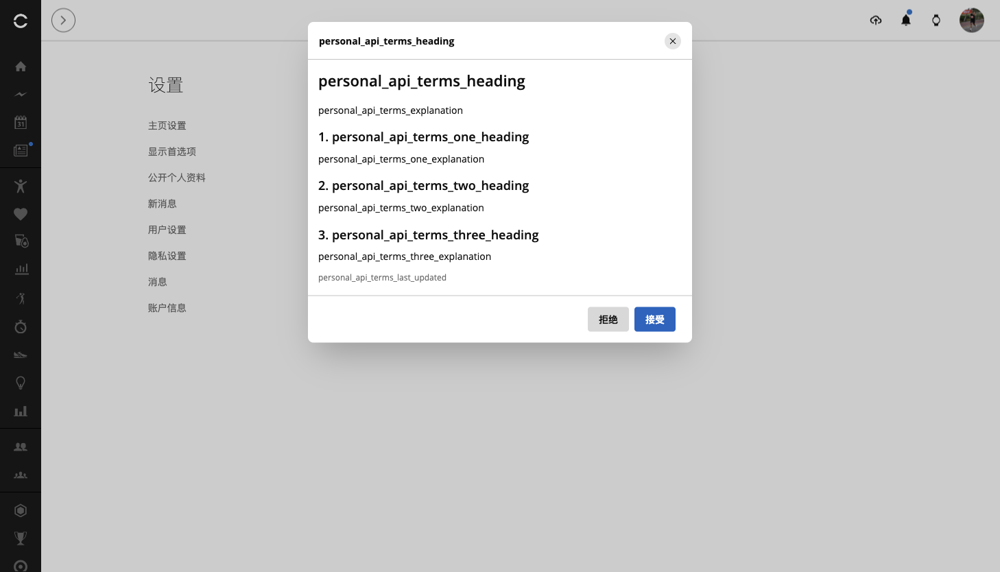
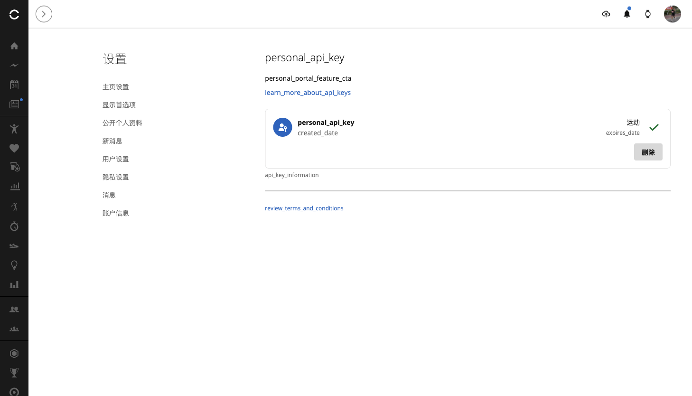

作者：李二牛 · 更新于 2026 年 10 月 22 日
佳明终于推出了官方 Personal API 模式，还提供了 Python 版 SDK。我很快参考官方实现移植了 TypeScript 版本，并接入 dsh-plugin-garmin-connect，让 DeepSeek Harness 和 MCP 都能使用。TS 版代码已经开源，欢迎点个 Star。 SDK 0.1.0 已发布到官方 npm。
我是李二牛，TypeScript SDK 和插件由我在社区维护，TS 版并非 Garmin 官方 SDK。这次是在已有插件中增加官方 Personal API 接入：官网生成 Key，插件换取令牌、读取数据，佳明密码不用交给 AI。插件同时提供 DSH 和 MCP 形态，用户无需另装底层 SDK；项目介绍见 gc.li2niu.com。
这次国际版已经实测跑通：令牌交换、8 项 SDK 读取、5 项真实 MCP 工具读取全部通过。 下面以国际版为主，带你申请 Key，再连接 DeepSeek Harness 或其他 Agent。大陆入口与当前情况放在文末。完整测试报告
一、先弄清它能做什么
Personal API 用于个人读取自己的数据。官方当前公开 26 个 GET 数据接口，覆盖活动、步数、睡眠、心率、HRV、血氧、压力、身体电量等，也能下载原始活动文件。呼吸数据包含日汇总、睡眠等字段，暂无独立的完整全天呼吸曲线接口。官方 FAQ · 接口文档
同一个 dsh-plugin-garmin-connect 插件有两种接入方式：
| 比较维度 | 账号密码／Connect 网页会话 | Personal API Key |
|---|---|---|
| 登录输入 | 在 Garmin 官方表单输入账号、密码，按需完成验证码 | 在 Garmin 官网申领 Key，后续由 Key 换取 token |
| 插件配置 | 邮箱、区域、可选别名，再完成网页登录 | 仅别名 + Key，新建账号默认国际版 |
| 密码处理 | 密码只填 Garmin 官方表单；当前插件设置保存邮箱和会话，不保存密码 | 插件不需要密码；Key 是敏感凭据，保存在本机 |
| 读取范围 | 活动、健康与训练相关数据，以工具和设备实际记录为准 | 官方开放的读取，包括 HRV、血氧、呼吸摘要等 |
| 训练库／日历写操作 | 按已提供工具创建、删除课表或取消排期，需预览确认 | 暂不支持（Personal API 当前只读） |
| 有效期与撤销 | 会话有效期和刷新由 Garmin 控制；可停用本机账号并清理会话，远端撤销规则以 Garmin 为准 | Key 可选 30／90／180 天或一年；token 最长 24 小时；官网 Delete 撤销 Key 和关联 token |
| MFA | 登录时在 Garmin 官方页完成 | 申领 Key 时按账号要求验证，后续用 Key 获取 token |
| 账号地区 | 原有方式支持中国区和国际区 | 国际实测通过；大陆令牌交换返回 HTTP 526，暂时无法读取数据 |
| 适用场景 | 已有账号继续使用，需要训练库和排期管理 | 希望通过官方个人 API 做数据读取与分析 |
插件的课表与日历管理能力继续由 Connect 网页会话提供，写操作仍需预览和确认。Personal 模式当前只读，其公开范围也未包含 Webhook。

图 1：官方说明列出了申请步骤，以及 API Key 换取令牌的方法。
二、打开国际版密钥页面
在浏览器打开 国际版 Personal API Key 页面，使用你的国际版 Garmin 账号完成登录。也可以从 Garmin 官方说明中的链接进入。
进入后，设置列表中会出现 Personal API Key，右侧点击 Create Key。

图 2：国际版设置页有正式入口，点击 Create Key 开始申请。
三、阅读条款，先选 30 天
阅读 Garmin Connect Personal API Supplemental Terms，确认后点击 Accept。这把 Key 用来访问你自己的数据，请为个人使用的程序配置，不要分享给其他人。

图 3：国际版条款可以正常显示，阅读后自行决定是否接受。
下一步选择有效期。官方提供 30 天、90 天、180 天和一年；首次体验建议选 30 days，再点击 Create。本次国际 Key 的有效期为 2026 年 10 月 22 日至 11 月 21 日。

图 4：这里选择 30 days，然后点击 Create。
四、保存 Key，再检查 Active 状态
完整 API Key 只显示一次。 创建后先复制并妥善保存，再点击完成；如果丢失，需要删除旧 Key、重新生成。不要把 Key 发给 AI、粘贴到评论区或留在截图里。本文不展示一次性密钥画面。
保存后刷新页面，检查状态是否为 Active，以及到期日是否正确。下图是真实刷新后的管理页面，它显示密钥记录，不显示完整 Key。

图 5：状态为 Active，到期日为 2026 年 11 月 21 日；需要停止授权时可在这里 Delete。
五、在 DeepSeek Harness 里接入
本文对应 dsh-plugin-garmin-connect 0.1.19 正式版，包含官方 Personal API 接入。 macOS 用户先退出 DeepSeek Harness，再使用应用内置 CLI 从官方 npm 安装：
"/Applications/DeepSeek Harness.app/Contents/Resources/runtime/cli/bin/dsh" \
plugin --profile desktop add dsh-plugin-garmin-connect@0.1.19 \
--ignore-scripts --registry=https://registry.npmjs.org/安装后重新打开 Harness。原用户可以保留已有网页会话账号，再新增 Personal 账号。按顺序操作：
- 打开 Harness 的插件页面，找到 dsh-plugin-garmin-connect，进入账号设置。
- 点击 + 添加账号，接入方式选择 官方 Personal API（国际版，只读）。
- 填写别名，例如“我的佳明国际版”；再填写官网刚生成的 API Key。
- 点击保存账号，随后点击验证连接；验证成功后即可开始查询。
新建 Personal 账号只需要别名和 API Key 两项，默认连接国际版。 不填邮箱、密码或地区，也不需要再次打开佳明登录页。Key 只在插件设置中输入，保存后不回填完整内容。
建议用 + 添加账号保留两种方式。若修改已有账号的接入方式，需要提供新方式的凭据：Personal 填 API Key，网页会话重新完成对应登录。

图 6：真实 Harness 桌面验收：保存别名和 Key 后连接成功，重启后仍可验证；完整 Key 不回填。
本机 DSH 怎么验收？
安装并重新加载插件后，依次检查：
- Personal 账号点击验证连接成功，目标别名正确。
- 在对话中指定该别名，先查询 profile，再读取有记录日期的单日 HRV；多账号时由 Agent 映射到设置页显示的稳定账号 ID。
- 返回设置页，确认 Key 显示“已设置”，完整密钥没有回填。
- 再明确选择原有网页会话账号查询 profile，核对账号隔离，避免混用数据。
以上已使用发布前的 0.1.19-dev.0 在真实 Harness 桌面完成：5 次 Personal 工具读取与 1 次原大陆网页会话读取均成功，重启后的连接验证也通过。HRV 时序与血氧测量值有空缺，呼吸为每日摘要。见桌面验收报告。 具体操作见本机 DSH／MCP 验证指南。
开发者：安装当前源码版
源码体验者可先构建本地安装包：
git clone --branch main --single-branch https://github.com/Likenttt/garmin-connect-plugin-for-dsh.git
cd garmin-connect-plugin-for-dsh
npm ci
npm run build
npm pack --ignore-scriptsmacOS 桌面版先退出 DeepSeek Harness，再使用应用内置 CLI 安装到 desktop profile。 本机核实的内置 CLI 版本为 0.2.1-rc.2。 将下方安装包路径换成生成文件的绝对路径：
"/Applications/DeepSeek Harness.app/Contents/Resources/runtime/cli/bin/dsh" \
plugin --profile desktop add /absolute/path/dsh-plugin-garmin-connect-0.1.19.tgz \
--ignore-scripts --registry=https://registry.npmjs.org/安装后重新打开桌面版，再进入插件账号设置。web 是另一份 profile，不会自动更新桌面 desktop 的插件；桌面版体验使用上述内置 CLI。
六、其他 Agent：用 MCP 接入
Codex、Claude Code 等支持 stdio MCP 的客户端，运行的是同一插件包 dsh-plugin-garmin-connect 的 lib/mcp.js。Harness 设置与独立 MCP 进程分别配置账号；在 DSH 保存的别名和 Key 不会自动同步到 MCP。
先创建一个仅自己可读的 UTF-8 纯文本文件，内容只放 API Key，不加引号或 JSON 包装。macOS／Linux 文件权限设为 600，父目录设为 700；Windows 使用仅当前用户可访问的权限。这属于文件权限保护，不等于加密。
在客户端的 MCP 配置中添加以下内容，并替换两个绝对路径：
{
"mcpServers": {
"garmin-personal": {
"command": "node",
"args": ["/absolute/path/to/garmin-connect-plugin-for-dsh/lib/mcp.js"],
"env": {
"GARMIN_PROVIDER": "personal",
"GARMIN_ACCOUNT": "my-garmin",
"GARMIN_ALIAS": "我的佳明国际版",
"GARMIN_REGION": "global",
"GARMIN_PERSONAL_API_KEY_FILE": "/absolute/private/path/garmin-personal.key"
}
}
}
}GARMIN_ALIAS 是便于辨认的别名，GARMIN_ACCOUNT 是稳定的机器 ID；不要把两者当作邮箱。国际 Key 使用 global，请求 personal.connectapi.garmin.com。也可以通过客户端私密环境注入 GARMIN_PERSONAL_API_KEY，但不要把真实 Key 写进可分享的 JSON。此模式无需 GARMIN_USERNAME，也无需另外安装 SDK。
保存配置后，重新加载 MCP，确认 Garmin 工具出现，再让 Agent 执行：
“先读取我的 Garmin 账号资料确认连接，再查看昨天的 HRV、血氧和呼吸摘要；暂时不用制定计划。”
本次已验证 MCP 的 profile、活动、HRV、血氧、呼吸 5 项读取。呼吸返回的是每日摘要。先用小查询确认账号与日期，再逐步分析趋势；工具存在和读取成功要分别确认。
令牌有效期与 SDK 安装
访问令牌最长有效 24 小时，且不超过 Key 的到期时间；过期后用 Key 重新获取，没有 refresh token。认证 FAQ
底层 connect-personal-api-ts 专注 Personal Key、token 与数据读取。开发者可从官方 npm 安装已发布的 SDK 0.1.0：
npm install @likenttt/connect-personal-api-ts@0.1.0插件用户不必单独安装 SDK。 dsh-plugin-garmin-connect 0.1.19 已集成 Personal API；Harness 和 MCP 均通过同一个插件包使用。
七、中国大陆站与端点现状：功能尚未完善
以下是 2026 年 10 月 22 日的大陆站实测情况。大陆账号登录后可以直达 Personal API Key 页面，也能创建 Key 并保留记录；页面文案尚未完善，令牌交换返回 HTTP 526，暂时无法读取数据。
1. 密钥页面能打开，部分文案仍是键名
设置页能加载，但本应显示为标题和按钮的内容，仍出现 personal_api_key、create_key 等键名。页面标题和按钮文案尚未完善。

图 7：大陆密钥页面可以打开，部分标题和按钮文案尚未正常显示。
2. 条款页面尚未显示可读正文
申请时出现的条款页面，标题与正文仍显示 personal_api_terms_* 占位符。本次页面未能显示可正常阅读的条款内容。

图 8：大陆申请条款的标题和正文仍是占位符，页面文案尚未完善。
3. Key 创建记录保留，数据接口仍未跑通
本次创建了 30 天有效期的大陆 Key，刷新后仍能看到记录，但日期标签未正常呈现。密钥记录已保留，数据读取仍未跑通。

图 9：大陆 Key 创建后刷新仍有记录，日期标签未正常显示；对应令牌交换返回 HTTP 526。
随后使用大陆 Key 请求对应 personal.connectapi.garmin.cn，换取令牌返回 HTTP 526／TOKEN_EXCHANGE_FAILED，大陆 Personal API 暂时无法读取健康数据。完整过程见 端点实测报告。
国际用国际 Key，大陆用大陆 Key，分开保存、不跨区回退。MCP 保留 GARMIN_REGION=cn 配置；已经保存的大陆 Personal 账号会保留区域并显示暂不可访问提示。新建 Harness Personal 账号默认国际版，不能把大陆 Key 当国际 Key 填入。
八、连接后，用这个插件问两句
- “用 dsh-plugin-garmin-connect 读取我最近 7 天的 HRV 和睡眠，按日期整理，并标出缺失的数据。”
- “用这个插件对比最近两次跑步的配速和心率，再汇总昨天的血氧和呼吸摘要，只解释实际返回的数据。”
让 AI 分析数据，把密钥留在你控制的本机配置里。